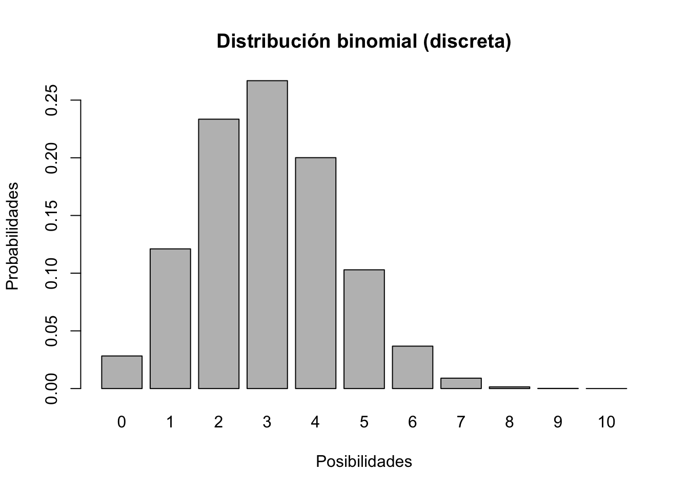
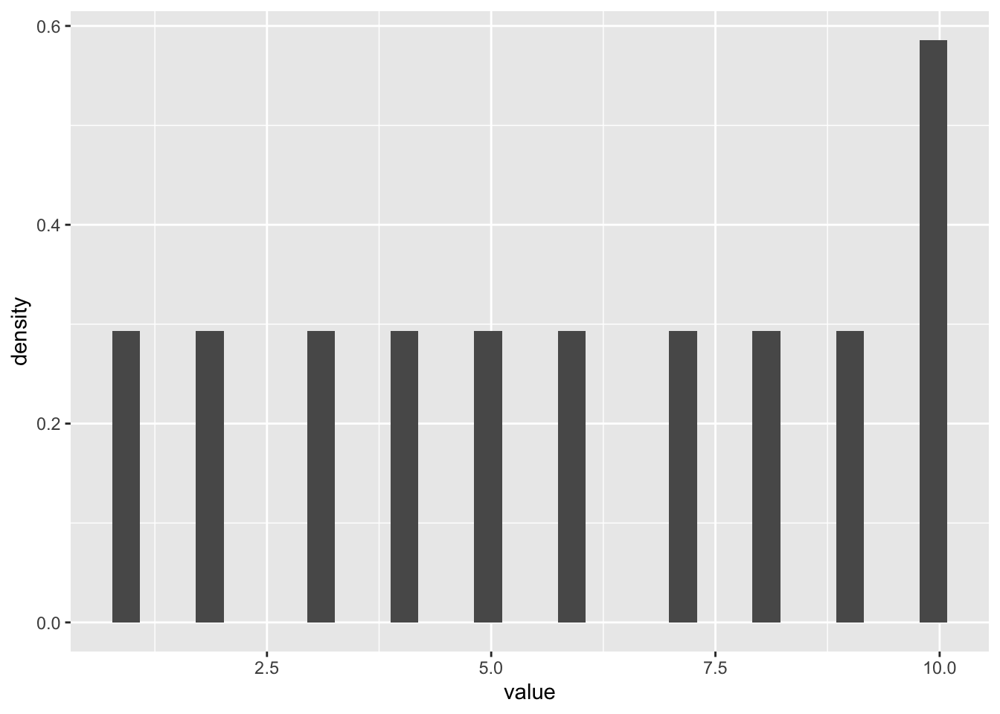
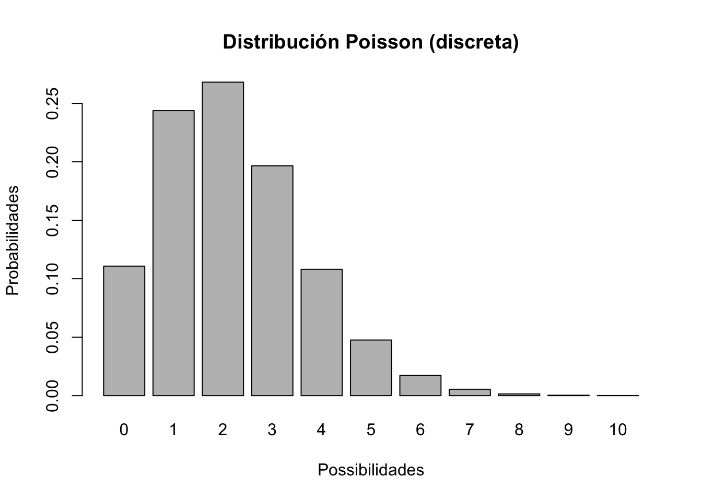
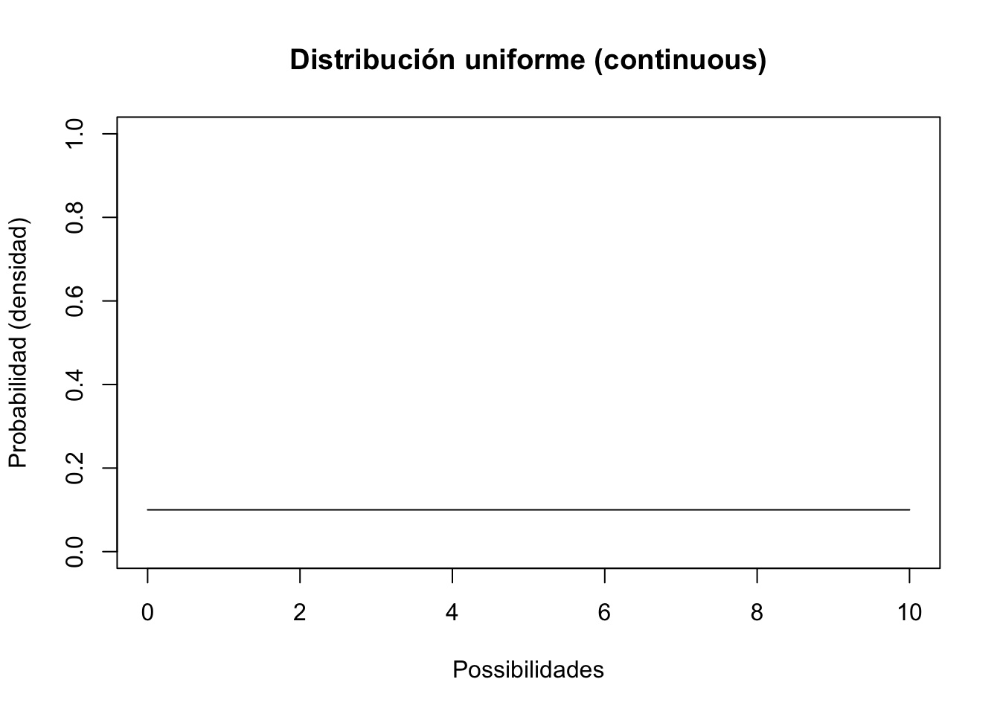
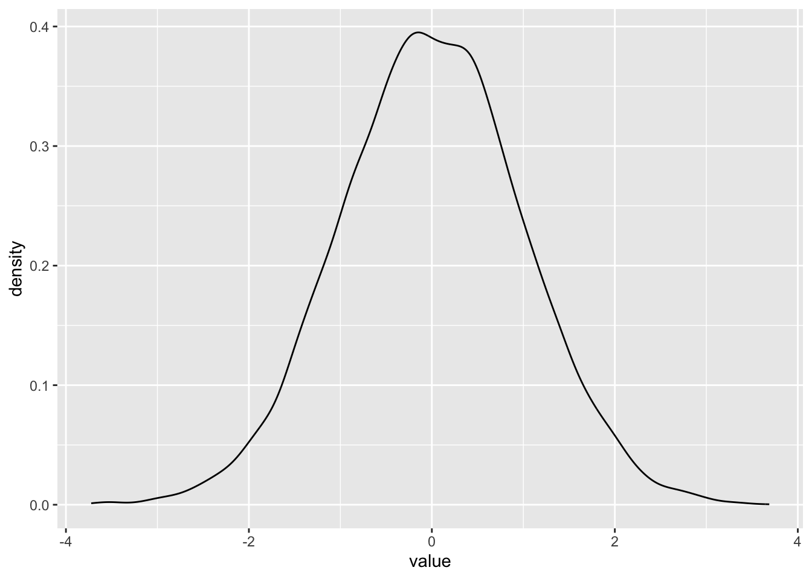
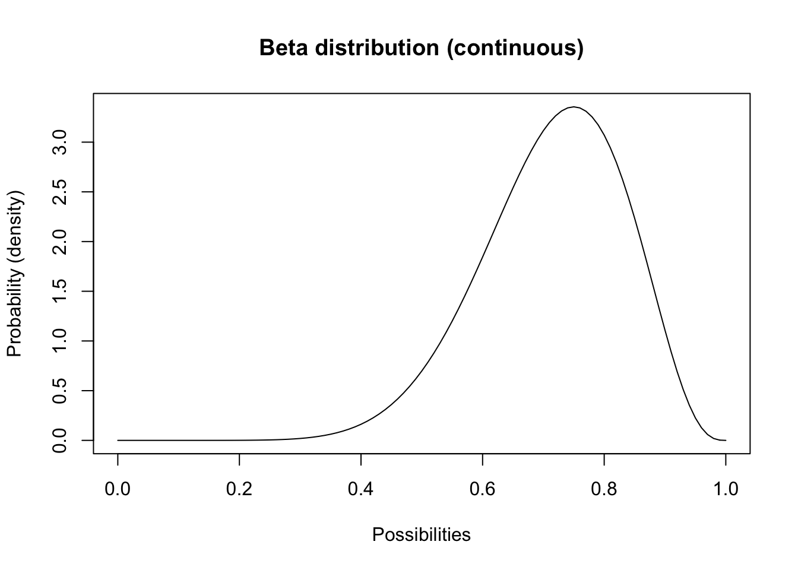
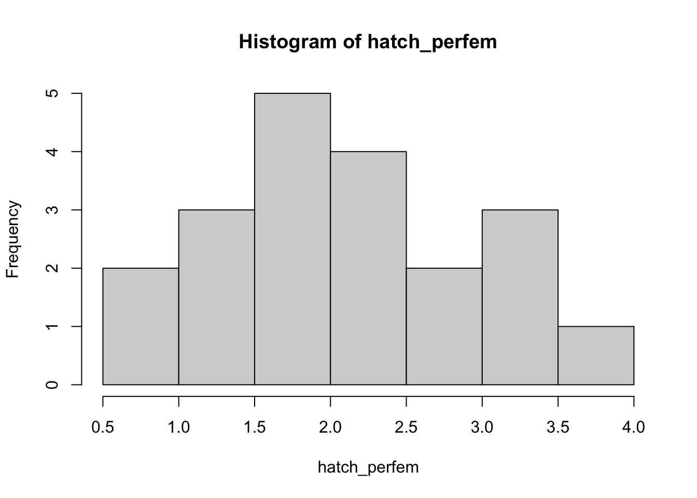
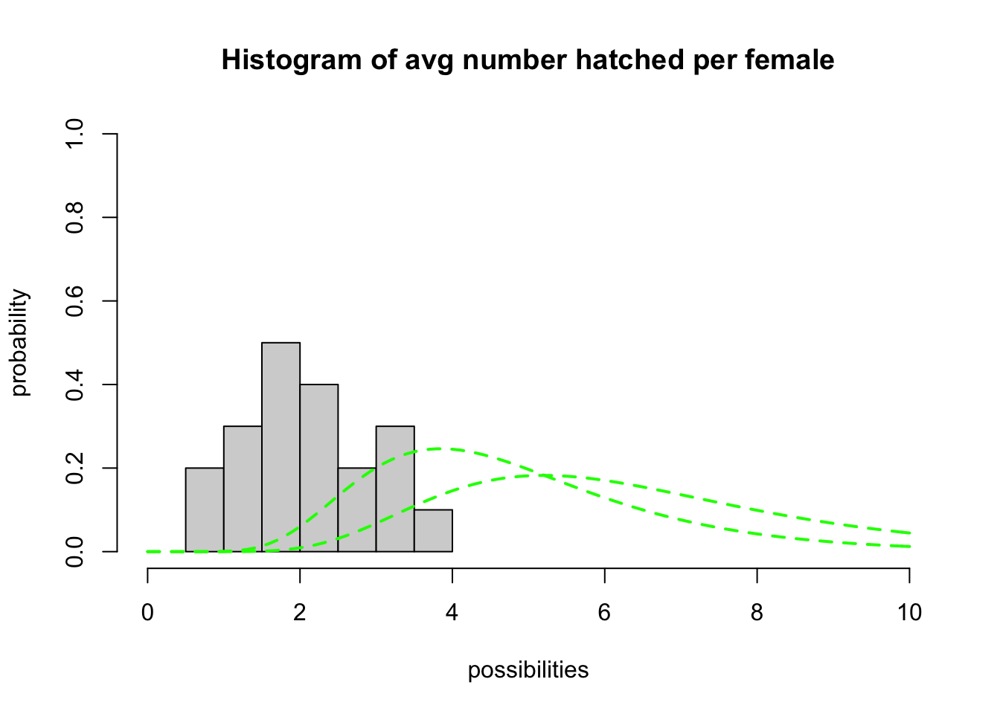

Estocasticidad y Incertidumbre
BIOL4558
Agosto 2021

Incertidumbre!
Todos los sistemas ecológicos están llenos de incertidumbre. Todos lo sabemos intuitivamente. Pero, ¿qué es exactamente lo que queremos decir con eso? ¿Y cómo podemos tomarlo en cuenta? ¿Cómo incorporarlo a nuestros modelos?
Este es uno de los módulos más importantes de este curso. Pero no está en el libro de Gotelli , ni está destacado en la mayoría de los libros de texto de ecología básica.
La taxonomía de incertidumbre
Hay dos razones principales por las que podemos estar inseguros. O carecemos de conocimientos suficientes o el sistema en sí es variable e impredecible. Exploremos estos dos tipos de incertidumbre.
Falta el conocimiento suficiente . Esto también se conoce como incertidumbre de muestreo , incertidumbre de parámetros, incertidumbre estructural y más. En términos prácticos: si recopilara más datos, podría (en principio) hacer un mejor modelo que represente más de cerca la realidad.
El sistema es inherentemente variable e impredecible. En la ecología de poblaciones y el modelado de sistemas, esto también se conoce como estocasticidad . En términos prácticos: no importa cuánto estudiemos y entendamos un sistema natural, nunca seremos capaces de predecir el futuro con certeza. Los sistemas ecológicos son inherentemente variables e impredecibles. No podemos saber con certeza si un individuo se apareará o morirá. ¡Ni siquiera podemos estar seguros de si las condiciones ambientales (por ejemplo, el clima) serán favorables o desfavorables para la producción de crías o la mortalidad!
Cómo lidiar con la incertidumbre
Como ecologistas de población aplicados, debemos abrazar la incertidumbre. Contamos con dos herramientas principales para ayudarnos a gestionar y dar cuenta de la incertidumbre en nuestros sistemas de estudio: análisis de incertidumbre y modelos estocásticos
Análisis de incertidumbre
¿Qué pasa si simplemente no tenemos suficientes datos para construir un modelo perfecto? Este es un ejemplo de falta de conocimientos suficientes. En este caso, la herramienta que utilizamos se llama análisis de incertidumbre . Básicamente, probamos un rango de valores posibles para un parámetro (generalmente una tasa vital per cápita, a menudo modelada como [Variables] en InsightMaker) sobre la que no estamos seguros (por ejemplo, la tasa de supervivencia de adultos podría ser 0.6 o 0.7) y ver qué sucede en nuestro sistema de estudio (por ejemplo, dada la incertidumbre que tenemos sobre el verdadero valor del parámetro, ¿es plausible que la población se extinga? ¿Es plausible que disminuya?).
Modelos estocásticos (estocasticidad demográfica y ambiental)
En segundo lugar, generalmente no podemos predecir si un individuo vivirá o morirá, se reproducirá o no se reproducirá, etc. Todo lo que podemos saber es la probabilidad de apareamiento, o la probabilidad de morir, o el valor per cápita. La tasa de producción de descendencia, o la probabilidad de que una descendencia determinada sea hembra. Pero cuando se trata de proyectar exactamente qué individuos viven o mueren (¡si un individuo tendrá suerte, por así decirlo!), Quién da a luz y quién no, y cuántas hembras nacen, simplemente no podemos saberlo con certeza. Este es un ejemplo de un sistema que es intrínsecamente impredecible. En ecología de poblaciones, esto se denomina estocasticidad demográfica . En este caso, variamos aleatoriamente el total de nacimientos y muertes (los [Flujos] en InsightMaker) para representar la imprevisibilidad inherente de los destinos individuales dentro de una población.
En tercer lugar, por lo general no podemos predecir si el próximo año o el siguiente será favorable o desfavorable para el crecimiento de la población, es decir, si las tasas vitales per cápita (p. Ej., \(B\), \(d\) o \(r\)) será más o menos óptimo en un momento futuro (si una población “tendrá suerte”, por así decirlo). Este es otro ejemplo de un sistema que es intrínsecamente impredecible. En ecología de poblaciones, esto se denomina estocasticidad ambiental. En este caso, variamos aleatoriamente las tasas vitales per cápita (representadas como [Variables] en InsightMaker) para representar la imprevisibilidad inherente de las condiciones ambientales.

Generación de números aleatorios
Para incorporar la incertidumbre y la aleatoriedad en nuestros modelos, a menudo incluimos componentes estocásticos para que cada modelo ejecutado (replicado), o cada año de cada modelo ejecutado, sea diferente entre sí (los resultados son variables). Es decir, ¡necesitamos incluir al menos un generador de números aleatorios en nuestros modelos! ¡Un generador de números aleatorios es como una máquina de bolas de lotería! Cada vez que queremos un número nuevo, buscamos y sacamos otro número, registramos el número, lo volvemos a colocar y lo agitamos nuevamente.

Cada generador de números aleatorios tiene una distribución . Esta es una forma de definir qué hay exactamente en el cuadro, lo que se puede visualizar como un diagrama de cuadro o histograma, con los valores posibles únicos representados en el eje X y las probabilidades asociadas con cada valor único representado en el eje Y.
Si desea seguir esta lección en R, puede encontrar el guión de R aquí. Recomiendo hacer clic derecho en el enlace, guardar el script en una carpeta designada y cargar el script en RStudio.
Por ejemplo, la caja puede tener 10 “unos”, 5 “dos” y 2 “tres”. En este caso, la distribución se ve así (probabilidad de cada posibilidad):
#############
# Generación de números aleatorios!
#####
# define an arbitrary distribution
box <- c(rep(1,10),rep(2,5),rep(3,2)) # define what's in the lottery ball machine (10 "1" balls, 5 "2" balls and 2 "3" balls)
box## [1] 1 1 1 1 1 1 1 1 1 1 2 2 2 2 2 3 3barplot(table(box)/sum(table(box)),ylab="probability",xlab="possibility") # visualize the distribution of possibilities
Una distribución de probabilidad puede ser prácticamente cualquier cosa que desees. Sin embargo, hay varios tipos clave de distribución de probabilidad que surgen una y otra vez, ¡y deberíamos aprenderlos!
Distribuciones de probabilidad
Discreto frente a continuo En distribuciones discretas, cada resultado único tiene una probabilidad específica (como la probabilidad de lanzar una moneda 10 veces y obtener 4 caras). Por ejemplo, consideremos una distribución binomial
################
# Distribuciones discretas
################
#######
# Ejemplo: distribución binomial (distribución de lanzamiento de moneda)
# graficar la distribución binomial!
xvals <- seq(0,10,1)
probs <- dbinom(xvals,10,prob=0.3)
#Cual es la suma de la probabilidades?
names(probs) <- xvals
barplot(probs,ylab="Probabilidades",xlab="Posibilidades",main="Distribución binomial (discreta)")
Comprobamos esta distribución con un ejercicio en clase
Cada estudiante tomará una moneda, y la tirará y contará cuantos caras contabiliza de 10 tiradas. Que tipo de característica biologíaca podría representar una distribución binomial? Aquí para comenzar datos ficticios. Tendrán que poner los datos recopilado en la clase.
library(tidyverse)
caras=c(4,7, 6, 8, 5, 4,3,7,7,2,
9, 3, 5,4, 5, 4, 4,2,6,5)
caras=as_tibble(caras)
caras## # A tibble: 20 × 1
## value
## <dbl>
## 1 4
## 2 7
## 3 6
## 4 8
## 5 5
## 6 4
## 7 3
## 8 7
## 9 7
## 10 2
## 11 9
## 12 3
## 13 5
## 14 4
## 15 5
## 16 4
## 17 4
## 18 2
## 19 6
## 20 5ggplot(caras, aes(value))+
geom_histogram(aes(y=..density..))## Warning: The dot-dot notation (`..density..`) was deprecated in ggplot2 3.4.0.
## ℹ Please use `after_stat(density)` instead.
## This warning is displayed once every 8 hours.
## Call `lifecycle::last_lifecycle_warnings()` to see where this warning was
## generated.
P ¿Qué parámetro de población podría ser útil para la modelización la distribución binomial?
Otra distribución discreta que usaremos en esta clase es la distribución de Poisson:
#########
# Distribución de Poisson
xvals <- seq(0,10,1)
probs <- dpois(xvals,lambda=2.2) # Distribución Poisson El lambda es una función que determina las probabilidades
names(probs) <- xvals
barplot(probs,ylab="Probabilidades",xlab="Possibilidades",main="Distribución Poisson (discreta)")
P ¿Qué parámetro de población podría ser útil para modelar la distribución de Poisson?
En distribuciones continuas, hay un número infinito de posibilidades entre dos posibilidades únicas.
Consideremos la distribución uniforme:
################
# DISTRIBUCIONES CONTINUAS
#################
##########
# Distribución uniforme
lower = 0
upper = 10
curve(dunif(x,lower,upper),0,10,ylab="Probabilidad (densidad)",xlab="Possibilidades",main="Distribución uniforme (continuous)",ylim=c(0,1)) # Distribución uniforme
Esta no es una distribución de aspecto muy interesante. Todos los números posibles del 0 al 10 son igualmente probables.
Otra distribución continua que debe conocer se llama Distribución normal. Esta distribución (la clásica distribución en forma de campana) tiene un límite inferior de \(-\infty\) y un límite superior de \(\infty\).
P ¿Qué parámetro de población podría ser útil esta distribución para modelar?
#########
# Distribución normal
mean = 7.1
stdev = 1.9
curve(dnorm(x,mean,stdev),0,15,ylab="Probabilidades (densidad)",xlab="Possibilidades",main="Distribución normal (continua)")  ### Nota que la distribución puede estar con valores negativos
### Nota que la distribución puede estar con valores negativos
#########
# Distribución normal
x=rnorm(10000, 0,1 )
x=as.tibble(x)## Warning: `as.tibble()` was deprecated in tibble 2.0.0.
## ℹ Please use `as_tibble()` instead.
## ℹ The signature and semantics have changed, see `?as_tibble`.
## This warning is displayed once every 8 hours.
## Call `lifecycle::last_lifecycle_warnings()` to see where this warning was
## generated.#x
ggplot(x, aes(value))+
geom_density()
Otra distribución continua que debe conocer se llama Distribución lognormal. Esta distribución tiene un límite inferior de cero y un límite superior de \(\infty\).
P ¿Qué parámetro de población podría ser útil para el modelado de la distribución logarítmica normal?
############
# Log-normal distribution
meanlog = 1.4
stdevlog = 0.6
curve(dlnorm(x,meanlog,stdevlog),0,15,ylab="Probability (density)",xlab="Possibilities",main="Lognormal distribution (continuous)") # probability density
Otra distribución continua que quizás desee conocer se llama distribución Beta. Esta distribución tiene un límite inferior de cero y un límite superior de 1.
P ¿Qué parámetro de población podría ser útil para modelar la distribución beta?
##########
# Beta distribution
shape1 = 10
shape2 = 4
curve(dbeta(x,shape1,shape2),0,1,ylab="Probability (density)",xlab="Possibilities",main="Beta distribution (continuous)") # probability density
Explore las distribuciones en R
Juguemos un poco con las distribuciones usando R.
Tenga en cuenta que todas estas distribuciones también están disponibles en InsightMaker.
¡Aquí hay algo de sintaxis R para ti!
Tenga en cuenta que todos los generadores de números aleatorios R son funciones que comienzan con la letra “r”, que significa “aleatorio”.
Los generadores de números aleatorios son funciones (“máquinas” que toman entradas y transforman las entradas (argumentos) en salidas útiles; en R, eso significa que utilizará la siguiente sintaxis:
thisfunction([argument 1],[argument 2] ... )
myresults <- thisfunction([argument 1],[argument 2] ... )
El primer argumento (especificado entre paréntesis en una llamada de función) representa cuántos números aleatorios desea que R extraiga de la distribución especificada.
Los argumentos posteriores representan los parámetros de la distribución aleatoria de la que desea extraer; puede modificar estos parámetros para adaptarlos a sus necesidades. Aquí hay algunos ejemplos (dibujando 1 número aleatorio a la vez):
################
# Random number generation!
### Binomial random number generator
rbinom(1,size=10,prob=0.5) # note: "size" is the number of coin flips, and "prob" is the probability of coming up 'heads'
### Poisson random number generator
rpois(1,lambda=4.1) # note: "lambda" represents the mean (and variance!) of the Poisson distribution
### Uniform random number generator
runif(1,min=1,max=3.5) # "min" and "max" are pretty obvious!
### Normal random number generator
rnorm(1,mean=3,sd=4.1) # normal distribution is defined by "mean" and "sd" (standard deviation).
### lognormal random number generator (like normal distribution, but can not go below zero)
rlnorm(1,meanlog=0.5,sdlog=0.2) # lognormal distribution is defined by "meanlog", the mean on the log scale and "sdlog" (standard deviation on the log scale).
### beta random number generator (bounded between 0 and 1- just like survival rate!)
rbeta(1,shape1=10,shape2=3) # beta distribution is defined by "shape1" and "shape2", which together define the mean and spread within the range from 0 to 1.
## Para información sobr ela distribución beta vea los sigyuientes enlaces
# 1. https://keisan.casio.com/exec/system/1180573226
# 2. https://stats.stackexchange.com/questions/376634/how-to-pick-starting-parameters-for-massfitdist-with-the-beta-distribution¿Puede cambiar una de las funciones anteriores para producir más de 1 número aleatorio?
¿Intentar cambiar uno de los otros parámetros y generar 100 números aleatorios? Para visualizar la distribución, puede usar la función “hist ()” para producir un histograma de la distribución aleatoria que acaba de generar.
¡Incluso puede crear su propia distribución si lo desea!
########
# muestra de una distribución arbitraria
distribution <- c(5,3,5,4,3,6,4,5,5,1,6,5,4,3,6,6,4,2,8,4,4,5,2) # make up a set of possibilities
hist(distribution,freq = F, ylab="Probability",xlab="Possibilities") # visualize distribution
sample(distribution,1) # take one random sample from this distribution!## [1] 5Ejercicio en clase: ¡Ajuste una distribución!

Imaginemos que hemos estudiado una gran población de canvas back duck durante un período de 20 años y hemos estimado el número promedio de huevos eclosionados con éxito por hembra (tasa de natalidad per cápita) para cada uno de los 20 años consecutivos.
Primero ingresamos estos números en R y visualizamos la distribución:
#############
# Demostración: ¡use datos para determinar una distribución!
#############
#############
# Made-up canvasback data- average number of eggs hatched per female for 20 years
hatch_perfem <- c(3.05, 1.45, 0.99, 3.24, 1.49, 1.70, 1.66, 2.32, 0.83, 2.41,
2.33, 1.68, 1.43, 2.74, 2.05, 3.13, 1.90, 3.69, 1.55, 2.79)
hist(hatch_perfem)
P: ¿Qué tipo de incertidumbre representa más probablemente este conjunto de valores? ¿Qué generador de números aleatorios podría utilizar para representar esta incertidumbre?
¡Ahora intentemos ajustar una distribución a estos datos! Podríamos usar una distribución normal (que estaría perfectamente bien), pero debido a que el número total per cápita de huevos eclosionados con éxito no puede bajar de cero (pero no tiene un límite superior definido), ¡es aún más apropiado usar una distribución logarítmica normal!
Podríamos usar estadísticas para ajustar la distribución, ¡pero solo usaremos prueba y error por ahora! Aquí hay un código para ayudarlo a comenzar.
Tenga en cuenta que la distribución logarítmica normal tiene dos parámetros: el primero (‘meanlog’) ayuda a definir la media y el otro (‘sdlog’) ayuda a determinar la variabilidad de la distribución.
############
# Trate de identificar una distribución logarítmica normal de números aleatorios para representar la 'canvasback duck' data
## first, plot a histogram of the data from the 20-year study
hist(hatch_perfem,freq=F,main="Histogram of avg number hatched per female",xlab="possibilities",ylab="probability",xlim=c(0,10),ylim=c(0,1))
## ahora, superponga una distribución de probabilidad logarítmica normal con parámetros arbitrarios (meanlog y sdlog). Esto es sólo un punto de partida.
curve(dlnorm(x,meanlog=1.5,sdlog=0.39),col="green",lty=2,lwd=2,add=T)
curve(dlnorm(x,meanlog=1.8,sdlog=0.39),col="green",lty=2,lwd=2,add=T)
curve(dlnorm(x,meanlog=2.0,sdlog=0.39),col="red",lty=2,lwd=2,add=T) # try a different value...
#### ¡Siga cambiando el valor de 'meanlog' hasta que encuentre los mejores parámetros que se ajusten a los datos!
#### Una vez que encuentre los parámetros que mejor se ajusten, genere 5 números aleatorios a partir de esta distribución usando la función "rlnorm ()" en R.
rlnorm(5,meanlog=1.5,sdlog=0.39) # ¡por ejemplo! (¡recuerde cambiar el parámetro "meanlog" por el valor que identificó anteriormente!)## [1] 3.795581 5.621093 4.929633 3.205789 4.953206Función para encontrar los parámetros de una distribución
Utilice una función para determinar cual los mejores parámetros de tendencia central y dispersión para encontrar el parámetro “meanlog” apropiado para la distribución logarítmica normal.
Use su distribución ajustada para predecir el número promedio de crías por hembra durante los próximos 5 años. Para hacer esto, use la función “rlnorm ()” en R.
P : ¿Cuál es el valor de mejor ajuste para “meanlog”?
Segundo ejemplo:
Asume que evaluaste 10 poblaciones de mariposas en un año especifico, y que encontraste que los individuos inmaduros (las larvas) tienen la siguiente supervivencias en las 10 poblaciones que evaluaste. Usa los siguientes datos para calcular el promedio y su dispersión con la función adecuada.
Calculando los momentos de una beta distibución con los datos orginales
Ejercicio en clase 2: estocasticidad e incertidumbre en InsightMaker
Estos conceptos (como todo en esta clase) se entienden mejor construyendo modelos.
Comencemos con una población básica en crecimiento exponencial que se parece a esto:

Parametros de Incertidumbres
Establezca Tasa de natalidad igual a 0.4 y Tasa de mortalidad igual a 0.3. Establezca la abundancia inicial en 10. En el menú “Configuración”, configure el modelo para que se ejecute durante 10 años. Asegúrese de que su stock de Población no pueda volverse negativo (esta es una configuración en el panel de configuración). Pulse “Simular” - ¡debería ver un crecimiento exponencial!
Incertidumbre de los parámetros: ¿Qué pasa si tenemos un conocimiento imperfecto sobre la tasa de natalidad? La tasa de natalidad puede oscilar entre 0,2 y 0,5. Ejecute el modelo con la tasa de natalidad más baja y más alta posible. NOTA: puede asignar un título a cada gráfico de resultados utilizando el símbolo en forma de engranaje en la parte superior de la ventana del gráfico; de esa manera, puede nombrar sus escenarios, por ejemplo, “tasa de natalidad mínima”.
Ahora use la herramienta “Comparar resultados” (en el menú “Herramientas” en la esquina superior derecha …) para visualizar el rango de posibles trayectorias de crecimiento de la población que serían posibles dada nuestra * incertidumbre * (falta de conocimiento) sobre la tasa de natalidad.
Q ¿Cuál es el rango de posibles abundancias finales después de 10 años?
Q ¿Deberíamos estudiar más este sistema si queremos saber si la población está creciendo o disminuyendo?
Demographic Stochasticity
Vuelva a establecer la * Tasa de natalidad * en 0,4. Haga clic en “Simular” - ¡asegúrese de ver un crecimiento exponencial!
Usaremos una * distribución binomial * para representar el número de muertes. Es decir, tiramos una moneda la misma cantidad de veces que hay individuos en la población. Si la moneda sale cara, el individuo muere. En este caso, estamos usando una moneda sesgada, ¡solo sale cara el 30% de las veces! La * distribución binomial * representa esencialmente el número de veces que aparecieron cabezas. Para hacer esto en InsightMaker, use la siguiente fórmula para el flujo * Muertes * (puede usar el menú “Funciones de números aleatorios” de la derecha para escribir automáticamente la sintaxis adecuada):
#RandBinomial([Population], [Death rate])En términos sencillos: el número de muertes cada año es una cantidad aleatoria determinada por el “lanzamiento de una moneda” (la distribución binomial es la distribución del “lanzamiento de una moneda”). El total de muertes se calcula lanzando una moneda por cada individuo de la población y matando a todos los individuos que salen “cara” (donde la probabilidad de que salga “cara” es la tasa de mortalidad).
Para el total de nacimientos, $B $ usaremos la distribución Poisson . La distribución de Poisson se usa a menudo para representar nacimientos, porque produce números enteros, no puede volverse negativa Y no tiene un límite superior estricto (a diferencia de la distribución binomial).
NOTA: es posible que haya más nacimientos que individuos actualmente en la población (por ejemplo, ¡si todos los individuos tienen dos descendientes!). ¡Esto no sería posible con una distribución binomial! Es decir, no se pueden obtener más “caras” (muertes) que el número total de lanzamientos de monedas (individuos en la población).
Para hacer esto en InsightMaker, use la siguiente fórmula para el flujo Nacimientos :
RandPoisson([Population]*[Birth rate])-or-
Lambda <- [Population]*[Birth rate]
RandPoisson(Lambda)En términos sencillos: el número de nacimientos (flujo [Nacimientos] en InsightMaker) es una extracción aleatoria de un generador de números aleatorios de Poisson con una media (Lambda) igual al número esperado de nacimientos ([Población] * [Tasa de natalidad]).
Ejecute la simulación. Cómo se ve?
Utilice la herramienta “Prueba de sensibilidad” (en el menú “Herramientas”, esquina superior derecha) para ejecutar el modelo 50 veces. Elija [Población] como “Primitiva supervisada”. NOTA: Recomiendo elegir el botón “Trazar cada ejecución”, de esa forma podemos generar un “diagrama de espagueti”.
Cambie la abundancia inicial a 500 y vuelva a ejecutar la herramienta “Prueba de sensibilidad”.
P ¿El efecto de la * estocasticidad demográfica * es mayor o menor en abundancias bajas o altas?
Estocasticidad ambiental
Regrese Nacimientos a lo que era antes ([Población] x [Tasa de natalidad]), y haga lo mismo para Muertes ([Población] x [Tasa de mortalidad]).
Usaremos una distribución normal para representar cómo cambia la tasa de natalidad per cápita cada año. Esto podría representar variabilidad climática: “años buenos” y “años malos”. La * distribución normal * se usa comúnmente para este tipo de variabilidad; se caracteriza por un valor promedio (media ) y una medida de variabilidad (desviación estándar ). Para hacer esto en InsightMaker, use la siguiente fórmula para la variable Tasa de natalidad :
RandNormal(0.4, 0.4)- De manera similar, use la siguiente fórmula para la variable Tasa de muerte :
RandNormal(0.3, 0.3)Utilice la herramienta “Prueba de sensibilidad” (en el menú “Herramientas”, esquina superior derecha) para ejecutar el modelo 50 veces. Elija [Población] como “Primitiva supervisada”.
Cambie la abundancia inicial a 500 y vuelva a ejecutar la herramienta “Prueba de sensibilidad”.
P ¿El efecto de la * estocasticidad ambiental * es mayor en abundancias bajas o altas?
- Tenga en cuenta que la distribución normal PUEDE ir por debajo de cero o por encima de 1, lo que no siempre es biológicamente realista. Sin embargo, como hemos visto antes, InsightMaker no permite que un [Flujo de entrada] se elimine de un [Stock] o un [Flujo de salida] para agregar a un [Stock], por lo que realmente no tenemos que preocuparnos por este problema. ! Es decir, InsightMaker truncará la distribución normal para nosotros. Alternativamente (si queremos ser muy explícitos) podríamos simplemente truncar la distribución normal nosotros mismos. Es decir, si el número aleatorio que extrae sale por debajo de cero, ¡hágalo cero!
Para la variable [Tasa de natalidad] en InsightMaker, esto se puede hacer así:
Max(0,RandNormal(0.4, 0.4))P ¿Puede implementar un escenario de catástrofe ? Es decir, crear un escenario en el que exista una baja probabilidad de que un evento (por ejemplo, inundación, enfermedad, sequía) cause una mortalidad muy alta y / o una tasa de natalidad muy baja.
Se puede implementar una catástrofe usando una declaración IF-THEN_ELSE: si el número aleatorio está por debajo de algún valor raro (por ejemplo, 0.05), entonces provocará una catástrofe (de lo contrario, mantenga todas las tasas vitales en sus valores normales).
Sugerencia: el generador de números aleatorios más básico (el más utilizado) extrae números de una distribución * uniforme * con un mínimo de 0 y un máximo de 1. Para hacer esto en InsightMaker, puede usar esta sintaxis:
Rand(0, 1)P ¿Qué pasa si la estocasticidad ambiental influye en la supervivencia y la fecundidad de la misma manera? Es decir: ¿qué pasa si un “buen año” para los nacimientos es también un buen año para la supervivencia? ¿Esto aumentaría o disminuiría el efecto de la estocasticidad ambiental sobre la dinámica de la población? En InsightMaker, intente implementar un escenario en el que la estocasticidad ambiental en la tasa de supervivencia esté perfectamente correlacionada con la estocasticidad ambiental en la tasa de natalidad.
Sugerencia: necesitará otra [variable] en su lienzo de InsightMaker; esta variable podría llamarse algo así como “Calidad del forraje” y debería almacenar un sorteo aleatorio de una distribución Normal con media “0” y desviación estándar “1”:
RandNormal(0, 1)A continuación, puede modificar su parámetro de fecundidad per cápita para tener la siguiente sintaxis, que representaría una fecundidad media de 0,85 con una desviación estándar de 0,4.
0.85+0.4*[forage quality]El mismo Ejercicio en Ingles
Parameter Uncertainty
Set Birth rate equal to 0.4 and Death rate equal to 0.3. Set initial abundance to 10. Under the “Settings” menu, set the model to run for 10 years. Make sure your Population stock can not go negative (this is a setting in the configuration panel). Hit “Simulate”- you should see exponential growth!
Parameter uncertainty: What if we have imperfect knowledge about birth rate? The birth rate could be anything from 0.2 to 0.5. Run the model with the lowest and the highest possible birth rate. NOTE: you can give each results plot a title using the gear-shaped symbol at the top of your plot window- that way you can name your scenarios – e.g., “min birth rate”.
Now use the “Compare Results” tool (under the “Tools” menu in the upper right corner…) to visualize the range of possible population growth trajectories that would be possible given our uncertainty (lack of knowledge) about birth rate.
Q What is the range of possible final abundances after 10 years?
Q Should we study this system more if we want to know whether the population is growing or declining??
Demographic Stochasticity
Set Birth rate back to 0.4. Hit “Simulate”- make sure you still see exponential growth!
We will use a Binomial distribution to represent the number of mortalities. That is, we flip a coin the same number of times as there are individuals in the population. If the coin comes up heads, then the individual dies. In this case we are using a biased coin- it only comes up heads 30% of the time! The Binomial distribution essentially represents the number of times heads came up. To do this in InsightMaker, use the following formula for the Deaths flow (you can use the right-hand “Random Number Functions” menu to auto-type the proper syntax):
RandBinomial([Population], [Death rate])In plain English: the number of deaths each year is a random quantity determined by “coin-flipping” (Binomial distribution is the “coin flip” distribution). The total deaths is computed by flipping a coin for each individual in the population and killing off all individuals that come out ‘heads’ (where the probability of coming up ‘heads’ is the death rate).
For the total births, \(B\) we will use the Poisson distribution. The Poisson distribution is often use to represent births, because it produces whole numbers, can’t go negative, AND it has no hard upper limit (unlike the binomial distribution).
NOTE: there could feasibly be more births than there are individuals currently in the population (e.g., if all individuals have two offspring!). This would not be possible with a binomial distribution! That is, you can’t get more “heads” (deaths) than the total number of coin flips (individuals in the population).
To do this in InsightMaker, use the following formula for the Births flow:
RandPoisson([Population]*[Birth rate])-or-
Lambda <- [Population]*[Birth rate]
RandPoisson(Lambda)In plain English: the number of births ([Births] flow in InsightMaker) is a random draw from a Poisson random number generator with a mean (Lambda) equal to the expected number of births ([Population]*[Birth rate]).
Run the simulation. What does it look like?
Use the “Sensitivity Testing” tool (in the “Tools” menu, upper right corner) to run the model 50 times. Choose [Population] as the “Monitored Primitive”. NOTE: I recommend choosing the “Plot Each Run” button – that way we can generate a “spaghetti plot”.
Change the initial abundance to 500 and re-run the “Sensitivity Testing” tool.
Q Is the effect of demographic stochasticity larger or smaller at low or high abundances?
Environmental Stochasticity
- Set Births back to what it was before ([Population]x[Birth rate]), and do the same for Deaths ([Population]x[Death rate]).
- We will use a Normal distribution to represent how the per-capita birth rate changes each year. This could represent climatic variablity – “good years” and “bad years”. The Normal distribution is commonly used for this type of variability- it is characterized by an average value (mean) and a variability measure (standard deviation). To do this in InsightMaker, use the following formula for the Birth Rate variable:
RandNormal(0.4, 0.4)Similarly, use the following formula for the Death Rate variable:
RandNormal(0.3, 0.3)Use the “Sensitivity Testing” tool (in the “Tools” menu, upper right corner) to run the model 50 times. Choose [Population] as the “Monitored Primitive”.
Change the initial abundance to 500 and re-run the “Sensitivity Testing” tool.
Q Is the effect of environmental stochasticity bigger at low or high abundances?
- Note that the normal distribution CAN go below zero or above 1, which is not always biologically realistic! However, as we have seen before, InsightMaker does not allow a [Flow In] to remove from a [Stock] or a [Flow Out] to add to a [Stock], so we don’t really need to worry about this problem! That is, InsightMaker will truncate the normal distribution for us. Alternatively (if we want to be very explicit) we could just truncate the normal distribution ourselves. That is, if the random number you draw comes out below zero, just make it zero!
For the [Birth Rate] variable in InsightMaker, this can be done like this:
Max(0,RandNormal(0.4, 0.4))Q Can you implement a catastrophe scenario? That is, make a scenario where there is a low probability of an event (e.g., flood, disease, drought) that causes very high mortality and/or very low birth rate?
A catastrophe can be implemented by using an IF-THEN-ELSE statement: if the random number is below some rare value (e.g., 0.05) then cause a catastrophe to occur (otherwise keep all vital rates at their normal values)!
Hint: The most basic (most commonly used) random number generator draws numbers from a uniform distribution with a minimum of 0 and a maximum of 1. To do this in InsightMaker, you can use this syntax:
Rand(0, 1)Q What if environmental stochasticity influences survival and fecundity in the same manner? That is: what if a “good year” for births is also a good year for survival? Would this increase or decrease the effect of environmental stochasticity on population dynamics? In InsightMaker, try to implement a scenario where the environmental stochasticity in survival rate is perfectly correlated with environmental stochasticity in birth rate.
Hint: you will need another [variable] in your InsightMaker canvas- this variable could be named something like “Forage Quality”, and should store a random draw from a Normal distribution with mean “0” and standard deviation “1”:
RandNormal(0, 1)Next, you can alter your per-capita fecundity parameter to have the following syntax, which would represent a mean fecundity of 0.85 with a standard deviation of 0.4
``` 0.85+0.4*[forage quality]